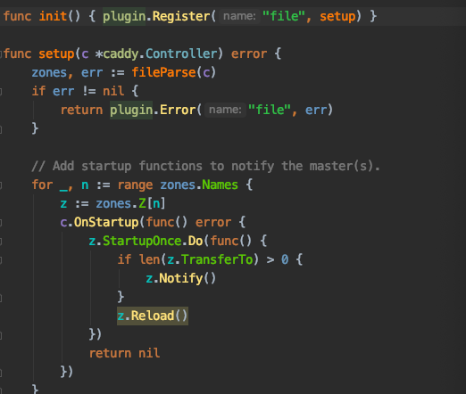
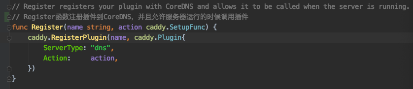
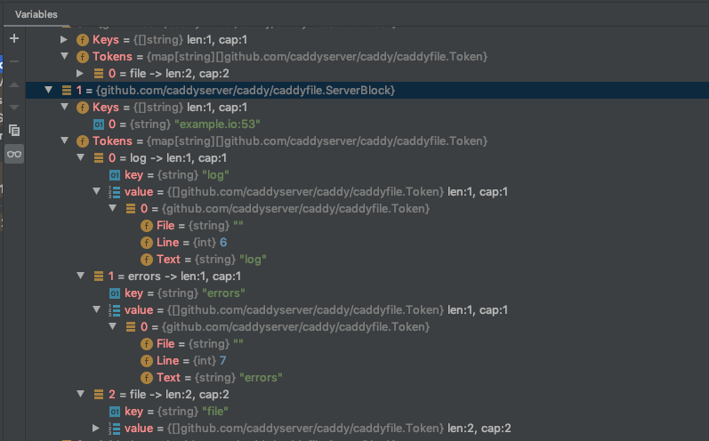

Coredns 启动流程分析
最近在看coredns的实现，它是基于 caddy 框架实现的，充分利用了 caddy 的插件功能。由于 coredns 大多数功能都是利用插件功能来实现的，所以整个项目的代码理解起来都比较简单。
CoreDNS 的实现
首先来看根目录下的 Makefile ，其中有自动生成 core/plugin/zplugin.go 文件和 core/dnsserver/zdirectives.go 文件的命令：
core/plugin/zplugin.go core/dnsserver/zdirectives.go: plugin.cfg
go generate coredns.go
该命令可以通过 plugin.cfg 中列出的插件列表自动生成 zplugin.go 和 zdirectives.go 中的代码：
// generated by directives_generate.go; DO NOT EDIT
package plugin
import (
// Include all plugins.
_ "github.com/caddyserver/caddy/onevent"
_ "github.com/coredns/coredns/plugin/acl"
_ "github.com/coredns/coredns/plugin/any"
_ "github.com/coredns/coredns/plugin/auto"
_ "github.com/coredns/coredns/plugin/autopath"
_ "github.com/coredns/coredns/plugin/azure"
_ "github.com/coredns/coredns/plugin/bind"
_ "github.com/coredns/coredns/plugin/bufsize"
_ "github.com/coredns/coredns/plugin/cache"
_ "github.com/coredns/coredns/plugin/cancel"
_ "github.com/coredns/coredns/plugin/chaos"
_ "github.com/coredns/coredns/plugin/clouddns"
_ "github.com/coredns/coredns/plugin/debug"
_ "github.com/coredns/coredns/plugin/dnssec"
_ "github.com/coredns/coredns/plugin/dnstap"
_ "github.com/coredns/coredns/plugin/erratic"
_ "github.com/coredns/coredns/plugin/errors"
_ "github.com/coredns/coredns/plugin/etcd"
_ "github.com/coredns/coredns/plugin/file"
_ "github.com/coredns/coredns/plugin/forward"
_ "github.com/coredns/coredns/plugin/grpc"
_ "github.com/coredns/coredns/plugin/health"
_ "github.com/coredns/coredns/plugin/hosts"
_ "github.com/coredns/coredns/plugin/k8s_external"
_ "github.com/coredns/coredns/plugin/kubernetes"
_ "github.com/coredns/coredns/plugin/loadbalance"
_ "github.com/coredns/coredns/plugin/log"
_ "github.com/coredns/coredns/plugin/loop"
_ "github.com/coredns/coredns/plugin/metadata"
_ "github.com/coredns/coredns/plugin/metrics"
_ "github.com/coredns/coredns/plugin/nsid"
_ "github.com/coredns/coredns/plugin/pprof"
_ "github.com/coredns/coredns/plugin/ready"
_ "github.com/coredns/coredns/plugin/reload"
_ "github.com/coredns/coredns/plugin/rewrite"
_ "github.com/coredns/coredns/plugin/root"
_ "github.com/coredns/coredns/plugin/route53"
_ "github.com/coredns/coredns/plugin/secondary"
_ "github.com/coredns/coredns/plugin/sign"
_ "github.com/coredns/coredns/plugin/template"
_ "github.com/coredns/coredns/plugin/tls"
_ "github.com/coredns/coredns/plugin/trace"
_ "github.com/coredns/coredns/plugin/transfer"
_ "github.com/coredns/coredns/plugin/whoami"
_ "github.com/coredns/federation"
)
// generated by directives_generate.go; DO NOT EDIT
package dnsserver
var Directives = []string{
"metadata",
"cancel",
"tls",
"reload",
"nsid",
"bufsize",
"root",
"bind",
"debug",
"trace",
"ready",
"health",
"pprof",
"prometheus",
"errors",
"log",
"dnstap",
"acl",
"any",
"chaos",
"loadbalance",
"cache",
"rewrite",
"dnssec",
"autopath",
"template",
"transfer",
"hosts",
"route53",
"azure",
"clouddns",
"federation",
"k8s_external",
"kubernetes",
"file",
"auto",
"secondary",
"etcd",
"loop",
"forward",
"grpc",
"erratic",
"whoami",
"on",
"sign",
}
这些代码的作用将在后面解释。
main函数
我们先看 coredns.go 中的 main 函数：
package main
//go:generate go run directives_generate.go
//go:generate go run owners_generate.go
import (
"github.com/coredns/coredns/coremain"
// 初始化所有插件
_ "github.com/coredns/coredns/core/plugin"
)
func main() {
coremain.Run()
}
想必大家都很熟悉 _ "github.com/coredns/coredns/core/plugin" 这一用法，目的就是想执行包 github.com/coredns/coredns/core/plugin 里的 init 函数。这时再回头看看 core/plugin/zplugin.go 中的代码，原来它又接着导入了所有在 plugin.cfg 中声明的插件的包，并且执行包里的 init 函数。这就使得所有的插件都会在 caddy 中注册自己，例如插件 file 的注册如下：


caddy.Plugin 结构包含了被注册的插件的基本信息,包括注册的服务类型(在CoreDNS中的服务类型是 dns )和请求这个插件时,这个插件该做的 Action。
// Plugin is a type which holds information about a plugin.
type Plugin struct {
// ServerType is the type of server this plugin is for.
// Can be empty if not applicable, or if the plugin
// can associate with any server type.
ServerType string
// Action is the plugin's setup function, if associated
// with a directive in the Caddyfile.
Action SetupFunc
}
caddy.RegisterPlugin方法的作用:
将指定plugin name(本示例:kubernetes)注册到服务类型为DNS的CoreDNS服务中。最终所有被注册plugin的存储结构为:
// plugins is a map of server type to map of plugin name to
// Plugin. These are the "general" plugins that may or may
// not be associated with a specific server type. If it's
// applicable to multiple server types or the server type is
// irrelevant, the key is empty string (""). But all plugins
// must have a name.
plugins = make(map[string]map[string]Plugin)
因此，通过上面的这个过程就把CoreDNS需要的所有的plugin都注册到了 plugins = make(map[string]map[string]Plugin) 结构中，用于后续的使用。
注册完所有的 plugin 之后，就开始执行 main 方法。接着会去调用 coremain.Run() 函数，通过 Run 方法进入 CoreDNS 的初始化过程。需要注意的是，run.go 引入了包 github.com/coredns/coredns/core/dnsserver ，里面也包含了init 方法：
const serverType = "dns"
// Any flags defined here, need to be namespaced to the serverType other
// wise they potentially clash with other server types.
func init() {
flag.StringVar(&Port, serverType+".port", DefaultPort, "Default port")
caddy.RegisterServerType(serverType, caddy.ServerType{
Directives: func() []string { return Directives },
DefaultInput: func() caddy.Input {
return caddy.CaddyfileInput{
Filepath: "Corefile",
Contents: []byte(".:" + Port + " {\nwhoami\nlog\n}\n"),
ServerTypeName: serverType,
}
},
NewContext: newContext,
})
}
这里会向 caddy 注册一个名为 dns 的服务类型，并关联与这个 dns 服务类型相关的一些操作和信息，包括：
- 插件的执行顺序
- 默认配置文件
newContext就是dnsContext对象，实现了 caddy 的 Context 接口
进入 run.go 的 init 函数，这里以注释的形式展示：
func init() {
// 默认配置文件
caddy.DefaultConfigFile = "Corefile"
caddy.Quiet = true // don't show init stuff from caddy
setVersion() // 设置版本信息
// 指定需要加载的配置文件
flag.StringVar(&conf, "conf", "", "Corefile to load (default \""+caddy.DefaultConfigFile+"\")")
flag.BoolVar(&plugins, "plugins", false, "List installed plugins")
// 需要将PIDfile写入的地址
flag.StringVar(&caddy.PidFile, "pidfile", "", "Path to write pid file")
flag.BoolVar(&version, "version", false, "Show version")
flag.BoolVar(&dnsserver.Quiet, "quiet", false, "Quiet mode (no initialization output)")
// 与加载配置文件有关
caddy.RegisterCaddyfileLoader("flag", caddy.LoaderFunc(confLoader))
caddy.SetDefaultCaddyfileLoader("default", caddy.LoaderFunc(defaultLoader))
caddy.AppName = coreName
caddy.AppVersion = CoreVersion
}
做了那么多准备工作，终于要进入主方法了，我们来看 run.go 中的 Run 方法：
其他的代码我们就不关心了，直接看 :
corefile, err := caddy.LoadCaddyfile(serverType)
该函数主要就是利用 coredns 注册的两个方法解析并加载配置文件到 corefile中，corefile 对应的结构体定义如下：
// Input represents a Caddyfile; its contents and file path
// (which should include the file name at the end of the path).
// If path does not apply (e.g. piped input) you may use
// any understandable value. The path is mainly used for logging,
// error messages, and debugging.
type Input interface {
// Gets the Caddyfile contents
Body() []byte
// Gets the path to the origin file
Path() string
// The type of server this input is intended for
ServerType() string
}
有了 corefile 我们就能够启动服务器啦：
instance, err := caddy.Start(corefile)
Start 的细节我们接下来再说，我们先把主流程看完，Start 会返回一个 instance 结构，其包含了服务的状态，并且可以用来控制和访问这些服务：
// Instance contains the state of servers created as a result of
// calling Start and can be used to access or control those servers.
// It is literally an instance of a server type. Instance values
// should NOT be copied. Use *Instance for safety.
type Instance struct {
// serverType is the name of the instance's server type
serverType string
// caddyfileInput is the input configuration text used for this process
caddyfileInput Input
// wg is used to wait for all servers to shut down
wg *sync.WaitGroup
// context is the context created for this instance,
// used to coordinate the setting up of the server type
context Context
// servers is the list of servers with their listeners
servers []ServerListener
// these callbacks execute when certain events occur
OnFirstStartup []func() error // starting, not as part of a restart
OnStartup []func() error // starting, even as part of a restart
OnRestart []func() error // before restart commences
OnRestartFailed []func() error // if restart failed
OnShutdown []func() error // stopping, even as part of a restart
OnFinalShutdown []func() error // stopping, not as part of a restart
// storing values on an instance is preferable to
// global state because these will get garbage-
// collected after in-process reloads when the
// old instances are destroyed; use StorageMu
// to access this value safely
Storage map[interface{}]interface{}
StorageMu sync.RWMutex
}
// ServerListener pairs a server to its listener and/or packetconn.
type ServerListener struct {
server Server
listener net.Listener
packet net.PacketConn
}
type Server interface {
TCPServer
UDPServer
}
- serverType：表示该 instance 的服务类型，在 coredns 中是
dns - caddyfileInput：表示配置文件
- wg：wg 用来等待所有的服务器关闭
- context：启动服务时需要的一些上下文配置，在 coredns 中，这个 context 就是
dnsContext - servers：该 instance 需要启动的服务列表，从上面的代码中可以看出，主要是
TCP和UDP服务。 - Onxxx：on 开头的方法可以看成当特定事件发生时候的回调函数
- Storage：用来存储全局状态
然后主函数阻塞在instance.Wait()上面。
接下来，我们来看 Start 函数：
// Start starts Caddy with the given Caddyfile.
//
// This function blocks until all the servers are listening.
func Start(cdyfile Input) (*Instance, error) {
inst := &Instance{serverType: cdyfile.ServerType(), wg: new(sync.WaitGroup), Storage: make(map[interface{}]interface{})}
err := startWithListenerFds(cdyfile, inst, nil)
if err != nil {
return inst, err
}
signalSuccessToParent()
if pidErr := writePidFile(); pidErr != nil {
log.Printf("[ERROR] Could not write pidfile: %v", pidErr)
}
// Execute instantiation events
EmitEvent(InstanceStartupEvent, inst)
return inst, nil
}
可以看见，他首先初始化了一个 Instance 结构体，在该函数中主要调用三个函数分别是:
- startWithListenerFds: 用于解析 Corefile 配置文件及校验指令执行的是否正确，并启动CoreDNS服务。
- signalSuccessToParent: 向父进程报告服务启动状态。
- writePidFile: 将启动服务的进程 ID(PID) 写入到指定的文件。
从上面的解释中即可知道 startWithListenerFds 是最为核心的函数调用了，接下来直接详细的分析startWithListenerFds 函数。在该函数中首先会调用
err = ValidateAndExecuteDirectives(cdyfile, inst, false)
从名字就可以看出这个函数的主要功能就是验证和执行指令（也就是插件），首先他会调用
sblocks, err := loadServerBlocks(stypeName, cdyfile.Path(), bytes.NewReader(cdyfile.Body()))
来解析配置文件中的内容，如果配置文件中出现了coredns无法识别的插件，那么就会直接返回错误，程序终止，如果解析成功，那么就会把配置文件中的内容映射到 ServerBlock 结构体中：
// ServerBlock associates any number of keys (usually addresses
// of some sort) with tokens (grouped by directive name).
type ServerBlock struct {
Keys []string
Tokens map[string][]Token
}
其中，keys 用来存储配置文件中 Zone 的相关数据，而 Tokens 则用来存储该 server 中的插件的相关信息，其中 Tokens 的 key 是 plugin name , []Token 存储的是该 plugin 在 Corefile 中的位置，便于后续的解析操作。可能不太好理解，但是对应配置文件就非常好理解啦：
// coredns.io:5300 为 keys
coredns.io:5300 {
file db.coredns.io
}
example.io:53 {
log
errors
file db.example.io
}
example.net:53 {
file db.example.net
}
.:53 {
kubernetes
proxy . 8.8.8.8
log
errors
cache
}

如上图，对应的 zone 就是 example.io:53，其中包含三个插件，所以 Tokens 有三个元素，其中 file 插件对应的value 的长度为 2。
接着，会调用
inst.context = stype.NewContext(inst)
这里的 stype.NewContext 就是在初始化阶段赋值给他的 newContext函数：
func newContext(i *caddy.Instance) caddy.Context {
return &dnsContext{keysToConfigs: make(map[string]*Config)}
}
// dnsContext
// 实现了caddy.Context接口
type dnsContext struct {
keysToConfigs map[string]*Config
// configs is the master list of all site configs.
// configs是所有站点配置的主列表。
configs []*Config
}
Context interface {
// Called after the Caddyfile is parsed into server
// blocks but before the directives are executed,
// this method gives you an opportunity to inspect
// the server blocks and prepare for the execution
// of directives. Return the server blocks (which
// you may modify, if desired) and an error, if any.
// The first argument is the name or path to the
// configuration file (Caddyfile).
//
// This function can be a no-op and simply return its
// input if there is nothing to do here.
InspectServerBlocks(string, []caddyfile.ServerBlock) ([]caddyfile.ServerBlock, error)
// This is what Caddy calls to make server instances.
// By this time, all directives have been executed and,
// presumably, the context has enough state to produce
// server instances for Caddy to start.
MakeServers() ([]Server, error)
}
所以，创建一个实现了 caddy.Context 接口的 dnsContext结构体，并赋值给 instance.Context，然后调用 Context 的接口方法 InspectServerBlocks ，这个函数会在解析完Corefile文件之后，执行Corefile中的指令之前会被调用，用于进一步的对 sblocks 进行检查并进行进一步的参数完善。：
sblocks, err = inst.context.InspectServerBlocks(cdyfile.Path(), sblocks)
等上面的准备工作准备完成之后，会调用executeDirectives去遍历所有的指令directives,并执行每个 sblocks 中的指令,并设置相应的 Controller 去执行相关 plugin 的 action 动作, 每个 serverblock 中的插件的 setup 只执行一次:
func executeDirectives(inst *Instance, filename string,
directives []string, sblocks []caddyfile.ServerBlock, justValidate bool) error {
// map of server block ID to map of directive name to whatever.
storages := make(map[int]map[string]interface{})
// It is crucial that directives are executed in the proper order.
// We loop with the directives on the outer loop so we execute
// a directive for all server blocks before going to the next directive.
// This is important mainly due to the parsing callbacks (below).
for _, dir := range directives {
for i, sb := range sblocks {
var once sync.Once
if _, ok := storages[i]; !ok {
storages[i] = make(map[string]interface{})
}
for j, key := range sb.Keys {
// Execute directive if it is in the server block
if tokens, ok := sb.Tokens[dir]; ok {
controller := &Controller{
instance: inst,
Key: key,
Dispenser: caddyfile.NewDispenserTokens(filename, tokens),
OncePerServerBlock: func(f func() error) error {
var err error
once.Do(func() {
err = f()
})
return err
},
ServerBlockIndex: i,
ServerBlockKeyIndex: j,
ServerBlockKeys: sb.Keys,
ServerBlockStorage: storages[i][dir],
}
setup, err := DirectiveAction(inst.serverType, dir)
if err != nil {
return err
}
err = setup(controller)
if err != nil {
return err
}
storages[i][dir] = controller.ServerBlockStorage // persist for this server block
}
}
}
if !justValidate {
// See if there are any callbacks to execute after this directive
if allCallbacks, ok := parsingCallbacks[inst.serverType]; ok {
callbacks := allCallbacks[dir]
for _, callback := range callbacks {
if err := callback(inst.context); err != nil {
return err
}
}
}
}
}
return nil
}
执行完了 ValidateAndExecuteDirectives 函数，就意味着所有的插件都已经准备完毕，接着调用 MakeServers返回一个服务器列表：
slist, err := inst.context.MakeServers()
我们深入进去会发现，这个方法其实非常简单：
// MakeServers uses the newly-created siteConfigs to create and return a list of server instances.
func (h *dnsContext) MakeServers() ([]caddy.Server, error) {
// Now that all Keys and Directives are parsed and initialized
// lets verify that there is no overlap on the zones and addresses to listen for
errValid := h.validateZonesAndListeningAddresses()
if errValid != nil {
return nil, errValid
}
// we must map (group) each config to a bind address
groups, err := groupConfigsByListenAddr(h.configs)
if err != nil {
return nil, err
}
// then we create a server for each group
var servers []caddy.Server
for addr, group := range groups {
// switch on addr
switch tr, _ := parse.Transport(addr); tr {
case transport.DNS:
s, err := NewServer(addr, group)
if err != nil {
return nil, err
}
servers = append(servers, s)
case transport.TLS:
s, err := NewServerTLS(addr, group)
if err != nil {
return nil, err
}
servers = append(servers, s)
case transport.GRPC:
s, err := NewServergRPC(addr, group)
if err != nil {
return nil, err
}
servers = append(servers, s)
case transport.HTTPS:
s, err := NewServerHTTPS(addr, group)
if err != nil {
return nil, err
}
servers = append(servers, s)
}
}
return servers, nil
}
首先，它验证是否有端口冲突（同一zone，并且同一端口才算冲突），然后再根据 dnsContext 中的 configs生成不同的 group，根据监听的端口不同被分到不同的 group，最后返回一个 groups，之后遍历该 groups, 然后根据不同的 transport 去启动相应的服务，当前 CoreDNS 支持4种类型的 transport，默认情况下都是 DNS 。
但是，无论哪种 transport 最终都会调用 NewServer：
func NewServer(addr string, group []*Config) (*Server, error) {
s := &Server{
Addr: addr,
zones: make(map[string]*Config),
graceTimeout: 5 * time.Second,
}
for _, site := range group {
s.zones[site.Zone] = site
// compile custom plugin for everything
var stack plugin.Handler
for i := len(site.Plugin) - 1; i >= 0; i-- {
stack = site.Plugin[i](stack)
// register the *handler* also
site.registerHandler(stack)
if s.trace == nil && stack.Name() == "trace" {
// we have to stash away the plugin, not the
// Tracer object, because the Tracer won't be initialized yet
if t, ok := stack.(trace.Trace); ok {
s.trace = t
}
}
// Unblock CH class queries when any of these plugins are loaded.
if _, ok := EnableChaos[stack.Name()]; ok {
s.classChaos = true
}
}
site.pluginChain = stack
}
return s, nil
}
由于代码过长，只看重点部分，先创建了一个 Server 变量，然后遍历 group ，并将每个 site 对应的 plugins 以栈的形式组成 pluginChain，最后返回。
上面只是make了CoreDNS需要启动的Server结构,但是真正的服务进程到现在这个阶段还没有真正的启动。当所有的 plugin 需要的准备工作都处理完成之后，就调用startServers来启动CoreDNS服务,startServers函数的定义如下:
func startServers(serverList []Server, inst *Instance, restartFds map[string]restartTriple) error {
for _, s := range serverList {
var (
ln net.Listener
pc net.PacketConn
err error
)
......
......
if ln == nil {
ln, err = s.Listen()
if err != nil {
return fmt.Errorf("Listen: %v", err)
}
}
if pc == nil {
pc, err = s.ListenPacket()
if err != nil {
return fmt.Errorf("ListenPacket: %v", err)
}
}
inst.servers = append(inst.servers, ServerListener{server: s, listener: ln, packet: pc})
}
for _, s := range inst.servers {
inst.wg.Add(2)
stopWg.Add(2)
func(s Server, ln net.Listener, pc net.PacketConn, inst *Instance) {
go func() {
defer func() {
inst.wg.Done()
stopWg.Done()
}()
errChan <- s.Serve(ln)
}()
go func() {
defer func() {
inst.wg.Done()
stopWg.Done()
}()
errChan <- s.ServePacket(pc)
}()
}(s.server, s.listener, s.packet, inst)
}
// Log errors that may be returned from Serve() calls,
// these errors should only be occurring in the server loop.
go func() {
for {
select {
case err := <-errChan:
if err != nil {
if !strings.Contains(err.Error(), "use of closed network connection") {
// this error is normal when closing the listener; see https://github.com/golang/go/issues/4373
log.Println(err)
}
}
case <-stopChan:
return
}
}
}()
go func() {
stopWg.Wait()
stopChan <- struct{}{}
}()
return nil
}
// Serve starts the server with an existing listener. It blocks until the server stops.
// This implements caddy.TCPServer interface.
func (s *Server) Serve(l net.Listener) error {
s.m.Lock()
s.server[tcp] = &dns.Server{Listener: l, Net: "tcp", Handler: dns.HandlerFunc(func(w dns.ResponseWriter, r *dns.Msg) {
ctx := context.WithValue(context.Background(), Key{}, s)
s.ServeDNS(ctx, w, r)
})}
s.m.Unlock()
return s.server[tcp].ActivateAndServe()
}
// ServePacket starts the server with an existing packetconn. It blocks until the server stops.
// This implements caddy.UDPServer interface.
func (s *Server) ServePacket(p net.PacketConn) error {
s.m.Lock()
s.server[udp] = &dns.Server{PacketConn: p, Net: "udp", Handler: dns.HandlerFunc(func(w dns.ResponseWriter, r *dns.Msg) {
ctx := context.WithValue(context.Background(), Key{}, s)
s.ServeDNS(ctx, w, r)
})}
s.m.Unlock()
return s.server[udp].ActivateAndServe()
}
同样省略部分代码，首先遍历 serverList ，并且生成 inst.servers 列表，然后再遍历 inst.servers 列表，启动协程分别监听 TCP 和 UDP，并且分别调用各自内部的 ServeDNS 来进行服务。
走到这里，启动流程算是彻底走完了。
总结
CoreDNS 代码的结构非常清晰，通过初始化时加载自定义的插件顺序，依次注入到 caddy 中去，并在执行的时候，按照定义的插件顺序依次执行，形成一个链式的调用结构。CoreDNS 同样还支持多种协议供使用者选择，这是一个非常好的实现。
参考：